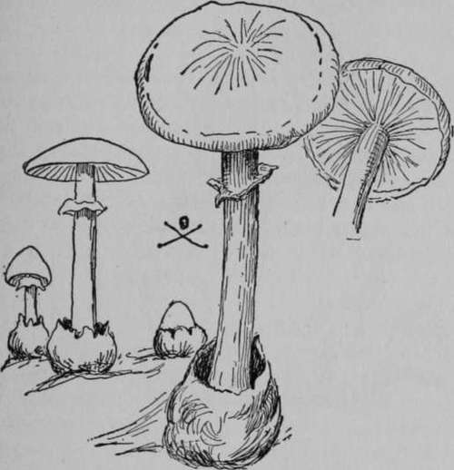

Poisonous Toadstools
Description
This section is from the book "The Book Of Woodcraft", by Ernest Thompson Seton. Also available from Amazon: The Book of Woodcraft.
Poisonous Toadstools
The only deadly poisonous kinds are the Amanitas. Others may purge and nauseate or cause vomiting, but it is believed that every recorded death from toadstool poisoning was caused by an Amanita, and unfortunately they are not only widespread and abundant, but they are much like the ordinary table mushrooms. They have, however, one or two strong marks: Their stalk always grows out of a "poison cup" which shows either as a cup or as a bulb; they have white or yellow gills, a ring around the stalk, and white spores.
First of these is the Deathcup, Destroying Angel, Sure-Death or Deadly Amanita (Amanita phalloides), one and one half to five inches across the cup; three to seven inches high; pure white, green, yellowish, olive, or grayish brown; smooth, but sticky when moist; gills below; spores white; on the stem is an annulus or ring just white the cap, and the long stalk arises out of a hollow bulb or cup; usually it is solitary.
A number of forms have been described as separate, but which are considered by Professor McIlvaine as mere varieties of the phalloides - namely, the Virulent Amanita (virosa), shining white with a cap at first conical and acute; Spring Amanita (verna), like virosa, but showing a more persistent and closely sheathing remains of the wrapper at the base of the stem; Big-veiled Amanita (magnivelaris), like verna, but has a large persistent annulus, and the bulb of the stem is elongated tapering downward; the Napkin Amanitas (mappa), volva circularly split; but all will be known by the four characters, poison-cup, ring, white or yellowish gills, and the form shown in the diagram - and all are deadly poison.
Amanita phalloides.
This wan demon of the woods is probably the deadliest of all vegetable growths. To this pale villain or its kin is traced the responsibility for all deaths on record from toadstool poisoning. There have been cases of recovery when a strong man got but a little of the poison, but any one making a meal of this fungus, when beyond reach of medical aid, has but a poor chance of escape. Its poison is a subtle alkaloid akin to rattlesnake venom, it rarely begins to show woods and pastures every year, and allowed to go to waste because of the well-founded terror of the Deathcup. Every one should make a point of learning its looks and smashing all he can find, together with the half-formed young ones about it. We may not succeed in exterminating the pale fiend, but we can at least put that individual beyond doing mischief or giving forth seeds.
Fly amanita.
Hated Amanita (A. Spreta)
(Poisonous.) Four to six inches high, three to five inches across the cap, with a bump in the middle, whitish or pale or rich brown, gills white, a its effects, until too late for treatment, the victim is beyond human help, and slowly succumbs. For centuries its nature has been a mystery; it has defied all remedies, only lately have we begun to win a little in the fight with this insidious assassin.
There are thousands of tons of delicious food spread in our large loose yellowish poison cup; the stem tapers above the ring and at the base and is tinged reddish brown in the middle.
Fly Amanita (A. Muscaria)
(Poisonous.) About the same size; mostly yellow but ranging from orange red to almost white usually with raised white spot sor scales on the top; gills white-or tinged yellow, spores white; flesh, white.
Frost's Amanita (A. Frostiana)
(Poisonous.) This is another gorgeous demon, small but brilliant and deadly. It is two to three inches high, with the cap one to two inches broad. The cap is brilliant scarlet, orange or yellow and warty, fluted on the margin. The gills are white or tinged yellow, the spores white; the stem white or yellow and the bulb margined above with a smooth collar or ring. A woodland specimen, no doubt responsible, McIlvaine thinks, for the bad reputation of the scarlet Russula which is harmless but resembles this.
Tall Deathcup (A. Excelsa)
(Poisonous.) This tall and lonely pirate of the beech woods is about four to six inches in stature as it stands in its cup, and four to five inches across the top which is brownish gray, fleshy and sticky, often wrinkled and covered with tiny warts, edge of cap fluted; gills white; stem covered with scales on its lower parts at least.
There are about twenty more of the Amanitas, varying in size and color, but most have the general style of tall flat mushrooms, and the label marks of poison viz: white or yellow gills, a poison cup, and white spores. They are not known to be poisonous. Some of them are good eating. One of them, the King Cap Or Royal Mushroom (A. Caesarea), is said to be the finest of all mushrooms. This magnificent and famous toadstool is three to eight inches across the cap which is smooth and of a gorgeous red orange or yellow color; gills yellow, though the spores are white; stem yellow; the cap is very flat when fully expanded and always is finely grooved or fluted on the upper edge. This is not only eatable but famous, yet it is so much like certain poisonous forms that it is better let alone. Indeed it is best for the beginner to accept the emphatic warning given by McIlvaine and Macadam, in their standard work "iooo American Fungi" (p. XVII):
"Any toadstool with white or lemon-yellow gills, casting white spores when laid - gills downward - upon a sheet of paper, having remnants of a fugitive skin in the shape of scabs or warts upon the upper surface of its cap, with a veil or ring, or remnants or stains of one, having at the base of its stem - in the ground - a loose, skinlike sheath surrounding it, or remnants of one," should be considered deadly poison till the contrary is proved by good authority. This may make you reject some wholesome kinds, but will surely keep you from danger.
If by ill chance any one has eaten a poisonous Amanita, the effects do not begin to show till sixteen or eighteen hours afterward - that is, long after the poison has passed through the stomach and begun its deadly work on the nerve centres.
Symptoms
Vomiting and purging, "the discharge from the bowels being watery with small flakes suspended, and sometimes containing blood," cramps in the extremities. The pulse is very slow and strong at first, but later weak and rapid, sometimes sweat and saliva pour out. Dizziness, faintness, and blindness, the skin clammy, cold and bluish or livid; temperature low with dreadful tetanic convulsions, and finally stupor. (McIlvaine and Macadam p. 627).
Remedy
"Take an emetic at once, and send for a physician with instructions to bring hypodermic syringe and atropine sulphate. The dose is 1/180 of a grain, and doses should be continued heroically until 1/20 of a grain is administered, or until, in the physician's opinion, a proper quantity has been injected. Where the victim is critically ill the 1/20 of a grain may be administered." (McIlvaine and Macadam XVII).
Continue to:
- prev: XIV. Mushrooms, Fungi, Or Toadstools
- Table of Contents
- next: Unwholesome But Not Deadly Toadstools
Tags
bookdome.com, books, online, free, old, antique, new, read, browse, download